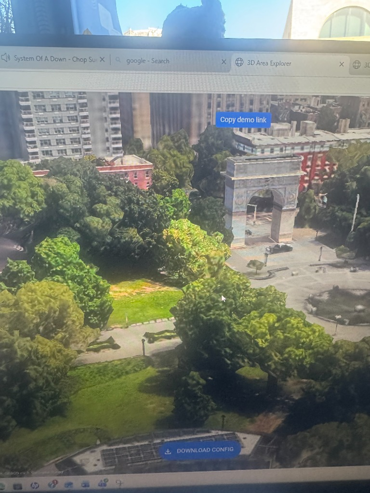

Target Base Model Example
This 3D view of a park (using Google Maps 3D Area Explorer) serves as the structural and visual goal for
our final campus modeling features.
This is exactly the level of detail we want to achieve when bringing the J.W. Caceres & M. Rivas Academy
Microforest into a true 3D point-cloud environment.
